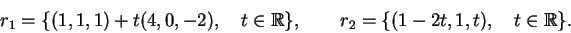
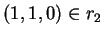
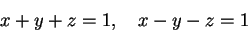
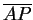

Next: About this document ...
P1 de Álgebra Linear I - 2001.1
Data: 9 de abril de 2001.
to to 0.7Nome:
Matrícula:
to to
0.7Assinatura: Turma:
| Questão |
Valor |
Nota |
Revisão |
| 1a |
0.5 |
|
|
| 1b |
1.0 |
|
|
| 1c |
0.5 |
|
|
| 1d |
1.0 |
|
|
| 1e |
0.5 |
|
|
| 1f |
0.5 |
|
|
| 1g |
0.5 |
|
|
| 1h |
1.0 |
|
|
| 2a |
0.5 |
|
|
| 2b |
0.5 |
|
|
| 2c |
1.0 |
|
|
| 2d |
0.5 |
|
|
| 3a |
1.0 |
|
|
| 3b |
1.0 |
|
|
| Total |
10.0 |
|
|
Instruções:
-
Não é permitido usar calculadora. Mantenha o celular desligado.
-
Justifique todas as respostas. Escreva de forma
clara, legível e organizada.
-
Em cada uma das questões da prova não haverá
pontuação parcial - Verifique cuidadosamente suas
respostas.
-
Faça a prova na sua turma.
1)
Consider as retas

- a)
Estude a posição relativa das retas r1 e r2,
isto é, descubra se são paralelas, reversas ou
concorrentes. (0.5 pts)
- b)
Calcule a distância entre as retas r1 e r2. (1.0 pts)
- c)
Encontre um ponto P de r1 tal que a distância de
P a r2 seja igual a distância entre r1 e r2. (0.5 pts)
- d)
Determine a área do paralelogramo com vértices
(1,1,1), (5,1,-1) (pontos de r1) e
(não é dado o quarto vértice).
(1.0 pts)
- e)
Determine o paralelogramo com vertices
(1,1,1), (5,1,-1) (pontos de r1),
e o quarto vértice em r2.
(0.5 pts)
- f)
Considere o plano
 que contém as duas retas r1 e r2.
Determine dois vetores paralelos ao plano
que não sejam
colineares. (0.5 pts)
que contém as duas retas r1 e r2.
Determine dois vetores paralelos ao plano
que não sejam
colineares. (0.5 pts)
- g)
Determine o vetor normal do plano .
(0.5 pts)
- h)
Determine as equações cartesianas e paramétricas do plano .
(0.5 + 0.5 pts)
2)
Considere a reta r dada pelas equações

e o ponto P=(1,0,1).
- a)
Determine o vetor diretor de r. (0.5 pts)
- b)
Determine as equações paramétricas de r. (0.5 pts)
- c)
Encontre um ponto A de r tal que
o vetor

seja ortogonal ao vetor diretor de r.
(1.0 pts)
- d
Calcule a distância de P à reta r. (0.5 pts)
3) Considere os planos definidos abaixo:
a) Encontre um terceiro plano  tal que
a interseção dos três planos
tal que
a interseção dos três planos 
 e
seja um único ponto. (1.0 pts)
e
seja um único ponto. (1.0 pts)
b) Encontre um terceiro plano
(diferente de
e
 )
tal que
a interseção dos três planos
e
planos seja uma reta.
(1.0 pts)
)
tal que
a interseção dos três planos
e
planos seja uma reta.
(1.0 pts)
Next: About this document ...
Lorenzo J. Diaz
2001-04-10